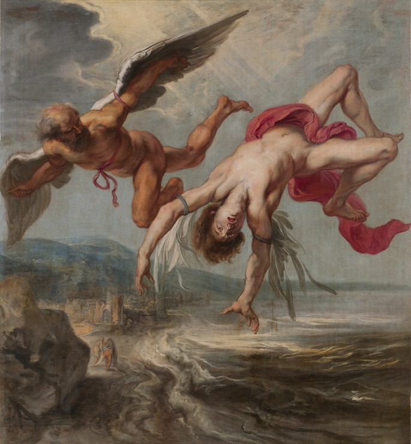
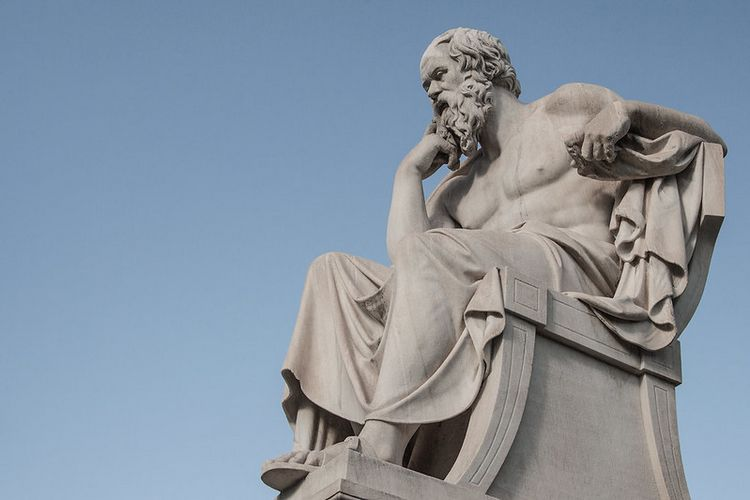
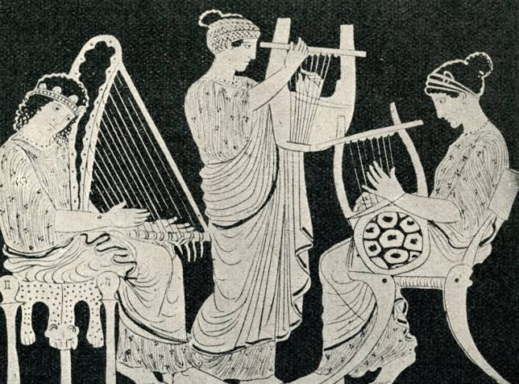
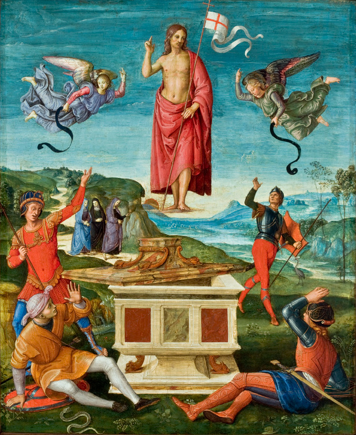

Uma civilização que ainda fala conosco.
A cultura grega nasceu de cidades-estado que competiam, debatiam e criavam. Daquele caldo de ideias saíram formas de pensar, de governar e de contar histórias que atravessaram mais de dois mil anos e continuam presentes na língua, na arquitetura e nas artes.
Hoje, a tradição antiga convive com festas ortodoxas, músicas populares e um jeito próprio de viver ao ar livre e em companhia.

Deuses, heróis e monstros.
Zeus, Hera, Atena, Poseidon e Apolo viviam, segundo os gregos, no Monte Olimpo. Ao lado dos deuses, heróis como Héracles, Aquiles e Odisseu protagonizaram relatos que explicavam o mundo e ensinavam valores.
Esses mitos estão por toda parte: nos templos, nos vasos pintados, nas esculturas e até em nomes de planetas e constelações.

Pensar e decidir em conjunto.
Em Atenas, por volta do século V a.C., os cidadãos passaram a debater e votar as decisões da cidade na assembleia. Nascia ali a ideia de democracia.
Sócrates, Platão e Aristóteles fizeram perguntas que ainda guiam a filosofia: o que é justiça, o que é conhecimento, como viver bem. A Ágora, praça central da cidade, era o palco dessas conversas.
.jpg)
Onde a tragédia e a comédia nasceram.
O teatro grego surgiu em festas dedicadas a Dioniso. Ésquilo, Sófocles e Eurípides escreveram tragédias; Aristófanes dominou a comédia.
Até hoje, o teatro de Epidauro, de acústica impressionante, recebe espetáculos no verão, com a plateia sentada nas mesmas arquibancadas de pedra de séculos atrás.

Do estádio de Olímpia ao mundo.
Os primeiros Jogos Olímpicos aconteceram em Olímpia, em honra a Zeus, e a data tradicional é 776 a.C. Durante a competição, as cidades gregas suspendiam suas guerras.
Os Jogos modernos foram retomados em Atenas, em 1896, e a chama olímpica ainda é acesa em Olímpia antes de cada edição.
.jpg)
Colunas que viraram referência.
A arquitetura grega criou três ordens clássicas: a dórica, mais simples e robusta; a jônica, com volutas elegantes; e a coríntia, ornamentada com folhas de acanto.
O Partenon, na Acrópole, é o exemplo mais famoso e inspirou edifícios públicos do mundo todo.

Bouzouki, círculos de dança e festa.
O bouzouki, instrumento de cordas com som marcante, é o símbolo da música popular grega. As danças tradicionais costumam ser feitas em roda ou em fila, de mãos dadas.
O famoso sirtaki foi criado para o filme Zorba, o Grego, de 1964, e virou cartão-postal do país.

A Páscoa é a maior festa do ano.
A maioria dos gregos segue a Igreja Ortodoxa, e a Páscoa ortodoxa é a celebração mais importante do calendário, com procissões à luz de velas e grandes refeições em família.
Por todo o país, capelas brancas de cúpula azul pontuam colinas, praias e ruas de vilarejos.
Você já fala um pouco de grego.
Muitas palavras do português têm origem grega.
- teatro · theatron
- democracia · demos + kratos
- filosofia · amor pela sabedoria
- música · mousiké
- história · historía
- olimpíada · Olympía